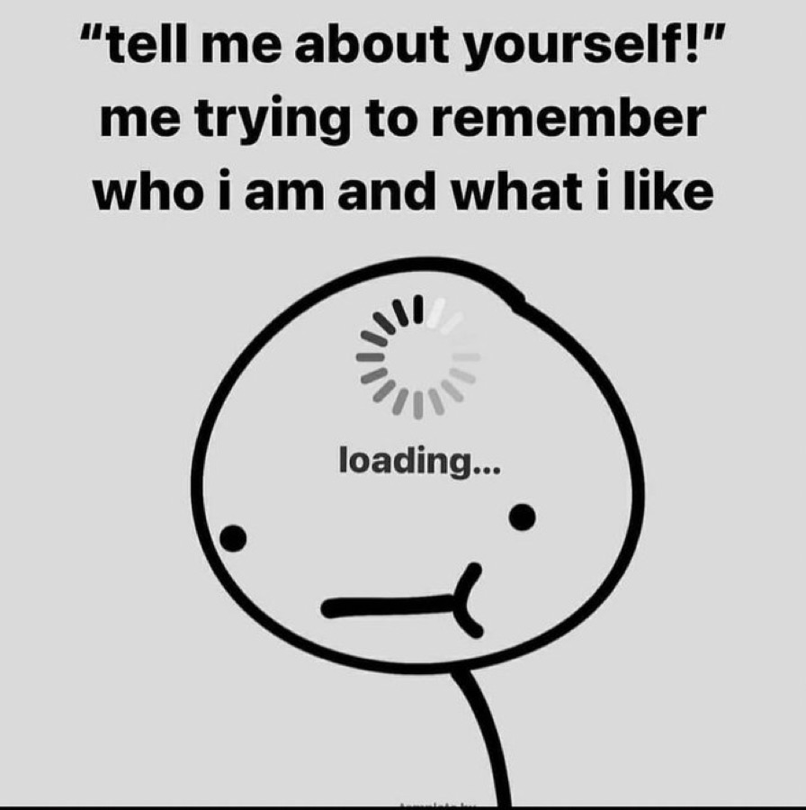
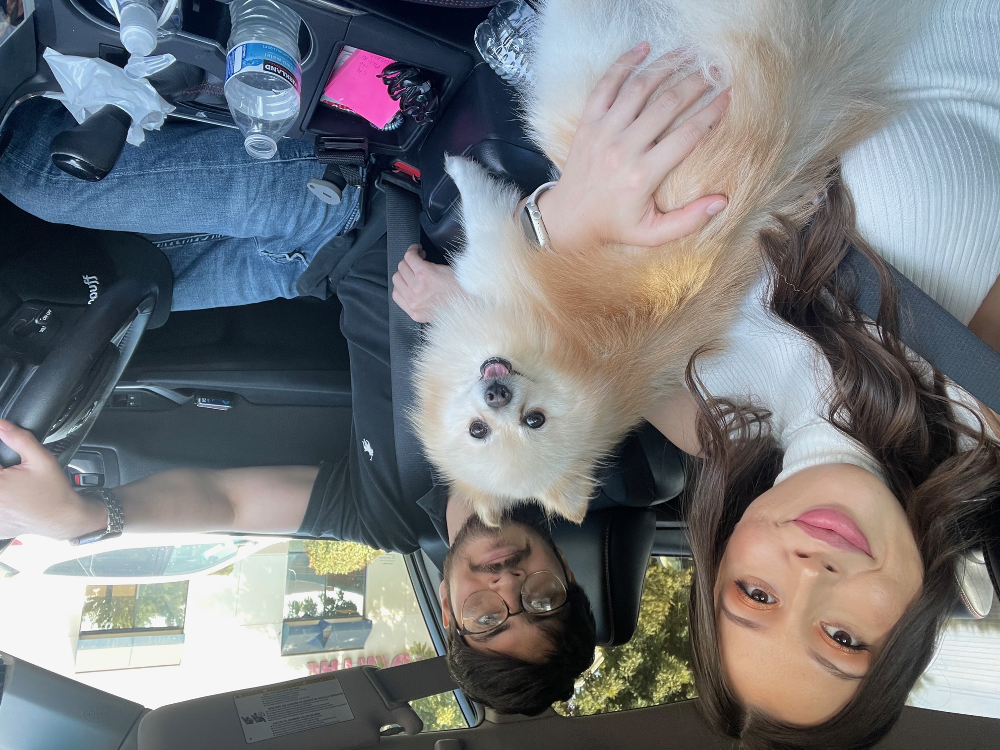

Don't judge me too hard, lol. Here's a brief intro about me.

Le Me, Litteraly Every Time
Ok, so brief intro time. I am Omar, and I just signed up for Coding Temple on the 8th. Sorry this is just thrown together, but I was in fact a tad bit overwhelmed by the intensity mulitiplied by the time crunch given the cohort starts on
the 17th - giving me just over a week to complete the prework. I do not have a background in tech or software or coding or anything similar. In fact, since graduating highschool, I went straight into insurance. I got licensed to solicit insurance in
California in 2015 and been rocking with that ever since. I wanted to get into sales since there was commisions involved and young me wanted the moneyyy chedder cheese. Anyways, long story short, through many ups and downs I decided
the little juice was not worth the squeeze any longer. So here I am. I could go into AI and all the other stuff that got me interested in coding and software and just like tech in general, but I still have to create links, so I will do that on a seperate page.
Here
Stuff That Brings Me Joy In Life.
These Pictures Pretty Much Set the Vibes.

Us 3 vs The World
Here's a pic of my fiancé, our dog Nixon, and I, on the way to some beach probably. Or possibly doing an Angry Chikz run. (that's a local hot chicken spot) It's the bomb.com. Or as the kids are saying these days, "It's like, hella lit fam".
I enjoy the simple things, food, quiet spaces, and a good meme. I like going to the beach, on hikes, the river, or to the mountains. I live about 1-2 hours from either option so when the wifey and I have the same days off thats usually
our preffered way to get some quality time in.
I Love The Memes
I love a good meme. When I'm not working, and my fiancé is, I usually chill at the house with the dog and scroll through differnet apps/social media and curate an extensive list of high quality memes. Nothing serious of course but it does bring
immense joy to my life. Another source of joy in my life is MMA. I love watching UFC and since the pandemic hit, I got super into it. So now on any given Saturday, if there's fights scheduled, there's a 90% chance that I'm watching. More on that later. Here